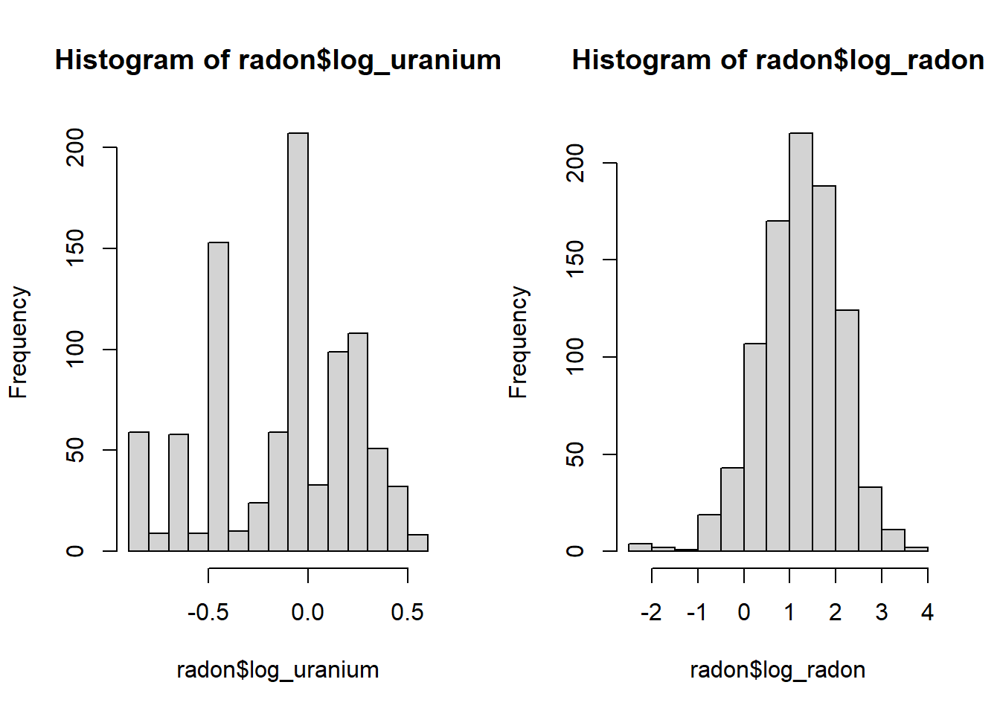

The radon.csv dataset, taken from the textbook by Gelman and Hill, Data Analysis Using Regression and Multilevel/Hierarchical Models, contains radon concentration measurements (log_radon, on a log scale) from 919 houses distributed in 85 counties (county) of the American state of Minnesota. The number of houses per county varies from 1 to 116. This dataset includes one predictor at the level of a house, the floor where the measurement was taken (0 = basement, 1 = ground floor) and one county-level predictor, the soil uranium concentration (log_uranium, on a log scale).
radon <- read.csv("../donnees/radon.csv")
head(radon)## county floor log_uranium log_radon
## 1 AITKIN 1 -0.6890476 0.7884574
## 2 AITKIN 0 -0.6890476 0.7884574
## 3 AITKIN 0 -0.6890476 1.0647107
## 4 AITKIN 0 -0.6890476 0.0000000
## 5 ANOKA 0 -0.8473129 1.1314021
## 6 ANOKA 0 -0.8473129 0.9162907In the model below, \(y_i\) is the value of log_radon for the \(i^{th}\) observation and \(x_i\) is the floor where the measurement was taken (0 or 1). We suppose that the log radon concentration is normally distributed around its expected value \(\mu_i\), with a standard deviation \(\sigma_y\).
\[y_i \sim \text{N}(\mu_i, \sigma_y)\]
The mean \(\mu_i\) depends on an intercept that varies between counties, where \(\beta_{0j[i]}\) is the intercept value for the county \(j\) containing the \(i^{th}\) observation, as well as a difference between the ground floor and basement (\(\beta_1\)) which is constant across counties.
\[\mu_i = \beta_{0j[i]} + \beta_{1} x_i\]
Finally, the county-level intercept (representing the mean log-concentration of radon in a basement) follows a linear regression where the mean depends on the log-concentration of uranium in the county, with a standard deviation \(\sigma_{\beta_0}\).
\[\beta_{0j} \sim \text{N}(\gamma_0 + \gamma_{1} u_j, \sigma_{\beta_0})\]
The remainder of this document is focused on how to code this model in Stan.
In RStudio, select File -> New File -> Stan File. RStudio creates a new Stan code file that already contains a sample template. Save the file with the extension .stan (e.g. radon.stan) before continuing.
First, notice that the // symbol is used to denote comments in Stan, unlike R which uses # for the same purpose. Except for these comments, the Stan file created contains three blocks.
data: Defines the variables that will be supplied to the model as input data.parameters: Defines the variables which must be estimated by the model.model: Defines the statistical model for the data according to the parameters.Most Stan models use at least these three blocks, although other blocks are possible: functions, transformed data, transformed parameters and generated quantities. As in R, the blocks are delimited by curly braces {}.
The model block contains only one instruction, y ~ normal(mu, sigma);, which indicates that y follows a normal distribution with mean mu and standard deviation sigma. In Stan, the symbol ~ is used to assign a certain probability distribution to a variable (unlike R where this symbol is used to relate the response of a model to the predictors).
Note: In Stan, all instructions must end with a semicolon ;, except those that start a block (like model).
Unlike R, all the variables appearing in a Stan model must first be “declared”. The first line of data, int<lower=0> N; declares the variable N which is an integer (type int) taking a minimum value of 0. It is important to differentiate the integer variables from variables that can take any real value (type real). The specification of lower or upper bounds is optional for the data elements, but they allow Stan to produce an error if the data supplied to the input does not respect these bounds. In this case, the lower bound should probably be 1 since the data contains at least 1 observation.
The second line of data, vector[N] y; declares the variable y as a vector of N elements. Note that it was important to declare N before using it in the declaration of y. Vectors in Stan work similar to R, except that they can only be composed of real numbers (we will see later how to define the equivalent of a vector for integers).
The parameters block declares two real variables, mu and sigma, the second being constrained to be greater than or equal to 0. It is important to define the minimum and maximum possible values for the parameters, otherwise Stan could try to example of assigning a negative value to sigma, which would generate an error when used as the standard deviation of the normal distribution in the model.
Since y is a vector ofN elements, while mu and sigma each contain a single value, the instruction y ~ normal (mu, sigma); in the model block indicates that each element of y follows the normal distribution with parametersmu and sigma. In a linear regression model for example, mu would also be a vector of size N, so the same instruction would associate each y with the corresponding mu, while all the elements would share the same sigma.
Now let’s modify the program to represent our radon model. Let’s start by describing a simple linear regression of the log of the radon concentration as a function of the floor, ignoring the effect of uranium and the random effect by county.
It is better to give the variables more descriptive names than x, y or N. In the data block, let’s changeN for n_obs (number of observations) andy for log_rad, the name of our response variable. We also add the predictor floor which is an integer between 0 and 1.
For an integer, we cannot define a vector, but rather use an array of n_obs elements as follows: int<lower=0, upper=1> floor[n_obs]; . Note that in this case the specification of the number of elements appears after the name of the variable, unlike a vector where it appears after the word vector.
In the parameters block, replace mu by two parameters from our regression, b_0 (the intercept) andb_floor (the floor effect), both real.
In the model block, we first declare mu as a vector of size n_obs, which will contain the prediction of the linear model for each observation. Variables declared in the model block are often used to define “intermediate” values which are neither model parameters nor data.
In addition to replacing y withlog_rad, we now need to specify the equation for mu. If floor was a vector, we could simply writemu = b_0 + b_floor * floor, in which case each value of mu would be calculated from each floor value. And in fact, we could have defined floor as a real variable without affecting the conclusions of the model. However, another option here is to create a loop:
for (i in 1:n_obs)
mu[i] = b_0 + b_floor * floor[i];The for instruction describes a loop, with a counting variablei which will successively take the values from 1 to n_obs. For each value of i, the instructions in the loop are executed, so here mu[i] receives a value determined by floor[i] and by the regression parameters.
In general, the instructions in the loop (the for block) should be enclosed in curly braces, but these can be omitted when there is only one instruction.
Here’s what your model should look like so far:
data {
int<lower=1> n_obs; // Number of observations
vector[n_obs] log_rad; // Log-conc. of radon
int<lower=0, upper=1> floor[n_obs];
}
parameters {
real b_0;
real b_floor;
real<lower=0> sigma;
}
model {
vector[n_obs] mu;
for (i in 1:n_obs)
mu[i] = b_0 + b_floor * floor[i];
log_rad ~ normal(mu, sigma);
} At the top right of the script window, instead of the Run button present for an R script, there is a Check button which allows you to check the syntax of the Stan model.
We can now define the second level of the regression, the effect of each county and its uranium concentration on the intercept b_0.
First, we need to make some changes to our data in R. In Stan, a categorical variable must be coded with integers. We therefore define a new column in the radon dataset for the county number county_no, obtained by converting the factor county to a factor, then an integer.
radon$county_no <- as.integer(as.factor(radon$county))
head(radon)## county floor log_uranium log_radon county_no
## 1 AITKIN 1 -0.6890476 0.7884574 1
## 2 AITKIN 0 -0.6890476 0.7884574 1
## 3 AITKIN 0 -0.6890476 1.0647107 1
## 4 AITKIN 0 -0.6890476 0.0000000 1
## 5 ANOKA 0 -0.8473129 1.1314021 2
## 6 ANOKA 0 -0.8473129 0.9162907 2Next, we create a separate dataset for the county-level data. The distinct function of dplyr retains the unique combinations of county_no and log_uranium present in the radon dataset.
library(dplyr)
counties <- distinct(radon, county_no, log_uranium) %>%
arrange(county_no)
head(counties)## county_no log_uranium
## 1 1 -0.6890476
## 2 2 -0.8473129
## 3 3 -0.1134588
## 4 4 -0.5933525
## 5 5 -0.1428905
## 6 6 0.3870567It is important to order this second dataset by county number, so that the uranium values are given to Stan in the correct order.
We are now ready to modify the Stan program. Under data, we have to declare the following variables:
int<lower=1> n_county; which will denote the number of counties present in the dataset;int<lower=1, upper=n_county> county[n_obs];, a table containing for each observation the corresponding county number;vector[n_county] log_u, a vector containing the log of the uranium concentration for each county.In the parameters block, the intercept of the model b_0 is now a vector of n_county values and we must add the following real parameters: g_0, the intercept of the regression of b_0 by county; g_u, the effect of uranium on b_0 and sigma_b0, the standard deviation of b_0 around the value predicted by the concentration of uranium.
Finally, in the model block, we add the equation for the regression of b_0 by county, which follows a normal distribution with mean g_0 + g_u * log_u and standard deviation sigma_b0.
b_0 ~ normal(g_0 + g_u * log_u, sigma_b0);Note that since all the elements of this equation are either real numbers, or vectors of length n_county, it is possible to write it all at once without making a loop.
In the equation for mu, the valueb_0 must be replaced by b_0[county[i]]. In this case, for each observation i, we will look for the corresponding county number, then take the value of the intercept b_0 for this county number.
Note: For this model, the random effect by county b_0 is an intermediate value that we could have defined in the blockparameters or model. The difference is that at the end of the program, Stan will provide estimates of the distribution of the variables defined in parameters, but not those defined inmodel.
This model contains five parameters for which no distribution was yet specified: g_0,g_u, b_floor,sigma_b0 and sigma. If we do not specify a prior distribution for these parameters, Stan chooses prior distributions which are extremely diffuse within the specified bounds, which produce estimates equivalent to the maximum likelihood. This works if we have a lot of data, but as we saw in the course, it is recommended in the Bayesian approach to choose weakly-informative prior distributions, which establish light constraints on the value of our parameters.
Here, our two numeric variables (log_radon andlog_uranium) have a variation of the order of a few units.
par(mfrow = c(1, 2))
hist(radon$log_uranium)
hist(radon$log_radon)
In this case, it is realistic to think that the coefficients will be of the order of a few units and not tens or hundreds. When the variables are on a scale of about 1, Stan’s developers suggest standard normal prior distributions, defined by std_normal(), a function equivalent to normal(0, 1). Note that for variables constrained to be greater than zero, such as sigma, the prior distribution is truncated at 0, so we have only the right half of the standard normal distribution.
Note: If the variables are on very different scales, it may be useful to standardize them, for example with scale in R, as the Bayesian inference algorithm works better if all the variables have comparable scales, rather than having very large and very small values.
Here is the program obtained so far:
data {
int<lower=1> n_obs; // Number of observations
int<lower=1> n_county; // Number of counties
vector[n_obs] log_rad; // Log-conc. radon
int<lower=0, upper=1> floor[n_obs];
int<lower=1, upper=n_county> county[n_obs]; // County number for each observation
vector[n_county] log_u; // Log-conc. uranium by county
}
parameters {
vector[n_county] b_0;
real b_floor; //
real g_0; // Intercept for the model of b_0 by county
real g_u; // Effect of log_u on county-level b_0
real<lower=0> sigma_b0;
real<lower=0> sigma;
}
model {
vector[n_obs] mu;
b_floor ~ std_normal();
g_0 ~ std_normal();
g_u ~ std_normal();
sigma_b0 ~ std_normal();
sigma ~ std_normal();
b_0 ~ normal(g_0 + g_u * log_u, sigma_b0);
for (i in 1:n_obs)
mu[i] = b_0[county[i]] + b_floor * floor[i];
log_rad ~ normal(mu, sigma);
} In the model above, we ask Stan to estimate both the random effects b_0 of each county, as well as their standard deviationsigma_b0. For reasons that we will discuss further in the next lesson by presenting the inference algorithm, the dependence between these quantities can be problematic. Briefly, this is due to the fact that the smaller the sigma_b0 standard deviation, the smaller the possible range of b_0.
It is therefore recommended to use a “non-centered” parameterization for the random effects in Stan. The equation for \(\beta_{0j}\) in our model:
\[\beta_{0j} \sim \text{N}(\gamma_0 + \gamma_{1j} u_j, \sigma_{\beta_0})\]
can be re-written as:
\[\beta_{0j} = \gamma_0 + \gamma_{1j} u_j + \sigma_{\beta_0} \nu_j\]
where \(\nu_j \sim \text{N}(0, 1)\) is a standard normal random variable. Since the random effects are represented as multiples of \(\sigma_{\beta_0}\), the parameters thus become independent.
In the code below, we have used the variable b0_alea for \(\nu_j\). Since b_0 is now a value depending entirely on other parameters as well as data, we can define it in a new transformed parameters block. The distribution of variables in that block, along with those under parameters, will be included in the Stan output.
data {
int<lower=1> n_obs; // Number of observations
int<lower=1> n_county; // Number of counties
vector[n_obs] log_rad; // Log-conc. radon
int<lower=0, upper=1> floor[n_obs];
int<lower=1, upper=n_county> county[n_obs]; // County number for each observation
vector[n_county] log_u; // Log-conc. uranium by county
}
parameters {
vector[n_county] b0_alea; // Random part of b_0
real b_floor; //
real g_0; // Intercept for the county-level model of b_0
real g_u; // Effect of log_u on county-level b_0
real<lower=0> sigma_b0;
real<lower=0> sigma;
}
transformed parameters {
vector[n_county] b_0; // County-level intercept
b_0 = g_0 + g_u * log_u + sigma_b0 * b0_alea;
}
model {
vector[n_obs] mu;
b_floor ~ std_normal();
g_0 ~ std_normal();
g_u ~ std_normal();
sigma_b0 ~ std_normal();
sigma ~ std_normal();
b0_alea ~ std_normal();
for (i in 1:n_obs)
mu[i] = b_0[county[i]] + b_floor * floor[i];
log_rad ~ normal(mu, sigma);
} The brms package can implement multiple models without having to write the Stan code. That package is recommended when applicable, since brms automatically optimizes the code Stan, e.g. by standardizing variables, adopting a non-centered parameterization, etc.
Documentation for Stan: https://mc-stan.org/users/documentation/